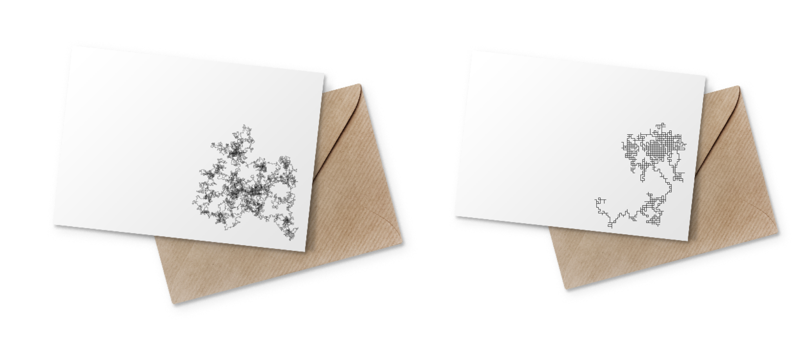

Once you know a secret,
it no longer is one.
This is the kind of paradox I loved thinking about as a kid, like how you can’t seek enlightenment directly; how you’ll never know whether the red *you* see is the same red I do; how some ideas are forgotten while others are one-way valves, offering perspectives which, once you see them, can’t be unseen. But what if there was a way to share a secret while still keeping it? What if there was a way to entrust someone with your deepest truths without actually being vulnerable with them?
Secret Hashes offers you the opportunity to do just this. Using the one-way valve of cryptographic hash functions and the power of random walks to encode your secrets, you can share your sacred truths with anyone in the form of a sleek, graphical greeting card—vulnerability-free.
Here are some secrets I’d like to share using Secret Hashes in my own life.
You are my father.
When I was 20 years old, I found out that the man I’d always called dad wasn’t my biological father. This didn’t change who I saw as my dad, though the secret was hard to process. My parents had gone out of their way to lie to me for two decades. It was a lot.
then, I’ve learnt my biodad’s name, and I’m not ashamed to share that I regularly google him. He has a whole life, a wife and kids, and he’s a marathon runner—which is strange, because I am too. I don’t want to reconnect with him as a dad, and I definitely don’t want to mess up his current life, but the marathon thing is weird, right?
I’d love to grab a drink with him sometime just to hear his voice, see where my Italian moustache and summer tans come from, find out if there is anything else we have in common. But I’m not quite ready yet. Instead, I’d like to send him an unsigned note of appreciation “from a neighbor,” with a scribble on the front that secretly shares, “You are my father.”
I didn't forgive you then, but I forgive you now.
I moved around as a kid before my family settled in New Hampshire. Every license plate read, “Live free or die!” I thought Fox News was real news. I didn’t feel comfortable being, or even exploring, who I was. I looked at the lives being lived around me—especially those of the adults close to me—and had a deep sense that growing up meant accepting a sad, repressive fate. I couldn’t imagine growing up to be happy and that left me unskilled and unambitious when it came to imagining my future.
This hopeless posture came from many places, and it was no one person’s fault, but there were specific people in my young life who went out of their way to make me feel I was not whole. They told me to take up less space. They told me I wasn’t trying hard enough. They told me, in no uncertain terms, how I needed to change to be loved by God, family, friends, and neighbors.
At the time, I just absorbed what they said and tried to fit myself into the mold they presented. I tried—and failed—so hard. Shortly after leaving home, however, I saw the ways they had hurt me, and I felt angry. Angry that they would treat a young person that way. That they would clip the wings of a bird trying to fly. I felt angry that I’d spent so many years unhappy. It’s only recently that I’ve metabolized the truism, “Hurt people hurt people.”
I haven’t talked to many of these people in a long time, especially since my parents moved out of New Hampshire. I don’t have it in me to return to those relationships with real vulnerability, but the idea of reconnecting with these folks—sending a loving note, maybe hearing their voice and learning about their lives—feels welcome. We can’t change the past, but we can move forward. On the front of these cards, a scribble will say without saying, “I didn’t forgive you then, but I forgive you now.”
I'm nonbinary!
Sometimes you don’t keep a thing secret, but it still is one. “Coming out” is only a thing because we assume a person is cis, straight, able-bodied, etc. unless we are explicitly told otherwise. We can even project these same assumptions onto ourselves.
When I realized I was bi, I didn’t feel the need to “come out.” Sexual orientation doesn’t come up much in my life, so I just dated people I loved, and my behavior spoke for itself—or it didn’t. For me, it didn’t matter much what people assumed about this aspect of my identity.
Since I realized I was nonbinary, however, I’ve wanted to come out to the people in my life who have known me as a “woman.” As I’ve worked through that, I’ve realized I’ll be in a perpetual state of coming out for the rest of my life, because we gender people automatically, placing them almost exclusively into the gender binary. I will never be able to “pass” as nonbinary.
This realization really chafes with my desire to avoid vulnerability (see above), so this is a large quantity card order. On each, the scribble reads, “I’m nonbinary!” and sending the card to a loved one offers me a real—if arbitrary—moment to let them know what the scribble says.
What's this all about?
For a long time, I’d say I made an applied study of performed vulnerability. By narrowing the scope of what I held sacred, I shrank the sphere of things I held secret. And, this meant I grew the sphere of things I was comfortable sharing. In fact, I grew it large enough that I’d often leave “intimate” exchanges unmoved, noticing a vulnerability asymmetry when conversational counterparts would express appreciation for the deep connection they felt we’d shared—an appreciation I couldn’t reciprocate.
- Why is my last name different from my family’s?
- Sure, I’ll tell.
- How did growing up in a small, conservative town mess me up?
- Let me count the ways.
- What body image issues consumed me through my teens and twenties?
- It was a dark time. You sitting down?
By narrativizing and then distancing myself from the sharp edges of my own experiences, I was able to share them without really sharing myself.
How does it work?
The whole thing is pretty simple. Your greeting card is generated in a four-part process: SECRET -> HASH -> SCRIBBLE -> PRINT + SHARE
First, you will write and submit your SECRET.
Just as you would in a diary, we invite you to express your secret in your own voice. Try saying it in different ways. Roll it around on your tongue. Listen to how it sounds expressed in different styles. Express it briefly, loudly, directly, in a single utterance.
Remember: No one else will have access to your secret once you’ve submitted it. We don’t see it on our end. We only use it to generate a hash.
Then, your secret is translated into a HASH.
A hash is the name for a string of characters output by a hash function, and a hash function is a computer program we use on the text of your original secret to encode it, unrecognizably. In the real world, hashes are used for verification purposes. For example, when receiving a file, you can compare the hash you get from running the file through a hash function to the hash the sender got by doing the same. If they match, you know that the file was unchanged between when it was sent and received. If the hashes are different, something was tampered with. Email, digital signatures, and many version control services rely on this technology. Secret Hash does too.
Without going too deep, a hash function breaks the text of your secret into individual characters, groups those characters into chunks, and then loops through each chunk: generating an intermediate hash, combining that intermediate hash with the next chunk to generate a new intermediate hash, combining that new intermediate hash with the next chunk to generate a newer intermediate hash, and on and on until the function has looped through all the chunks. The last “intermediate” hash becomes the final hash.
In this way, hash functions are able to translate text of arbitrary length (whether a single sentence secret or The Collected Poems of Langston Hughes) into a hash of fixed length (in the case of this project, a string of TK numbers), ensuring that the same input text will always result in the same hash, because the same recipe is applied every time. The complexity of this recipe also ensures that while the original text is uniquely encoded in its hash, the hash is a one-way valve. It cannot be reverse engineered, meaning the original text cannot be recovered from the hash, meaning your secret cannot be decoded from your hash—or from the scribble we draw with it.
Next, your hash is encoded in a SCRIBBLE.
This is done by splitting the hash up into its individual digits and interpreting those digits as directions for how to draw a scribble. This part of the translation takes inspiration from Seymour Papert’s LOGO programming language, which allows users to reason in an embodied way about geometry. To understand this part of the encoding process, imagine you are a turtle holding a pen standing on the front of a blank greeting card. Your instructions are to touch the pen to the surface of the greeting card and follow these instructions:
- Look at the first digit in your hash, and walk forward that many steps. Then turn a random amount.
- Look at the second digit in your hash, and walk forward that many steps. Then turn a random amount.
- Look at the third digit in your hash, and walk forward that many steps—and on and on until you reach the last digit in your hash.
In this way, you draw a scribble which could, in theory, be decoded back into your hash (though remember that your hash cannot be decoded back into your secret), however the same hash can produce an infinite number of scribbles due to all the random turns. This isn’t for the security of your secret, but instead for aesthetics.
Play around with the algorithm to produce different scribbles until you find one you like.
Now, you’re ready to PRINT your scribble on a greeting card and SHARE YOUR SECRET with the world.
Make sure that you like the scribble you see above and that you’ve checked the “I like this scribble” box above. The scribble you see is the one that will be printed onto your cards!
This is the the style of the Secret Hash cards. If you like what you see, you can purchase your own by filling out the prompts below. Please expect TK for preparing and shipping your order.